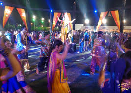
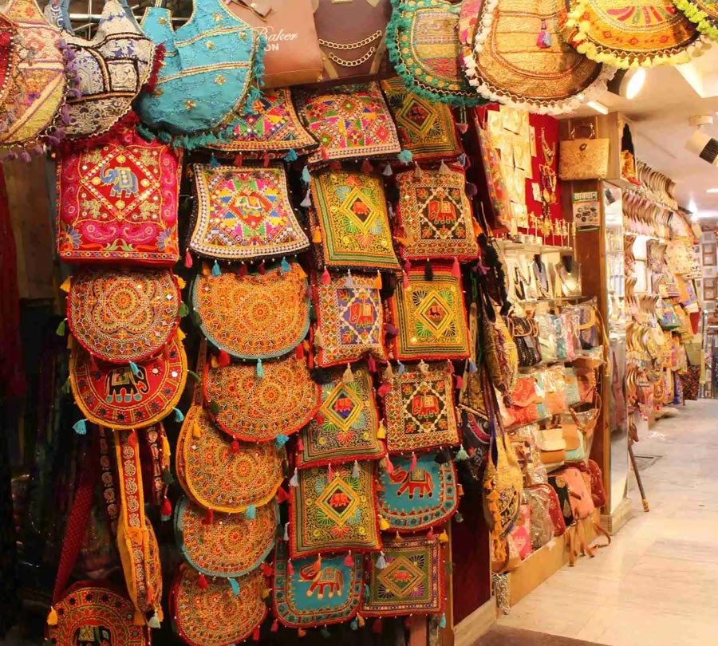
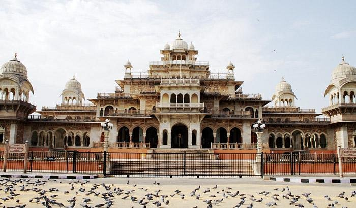
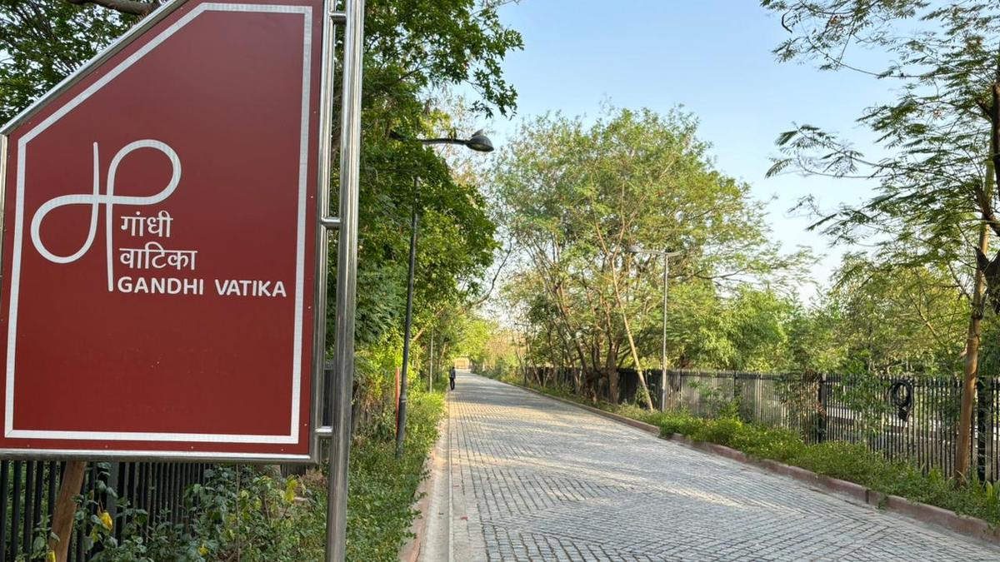

5 Things You Need to Know This Week: Jaipur
Hey there, Jaipur locals! Staying up-to-date with what's happening in our beautiful Pink City can be tough. But don't worry, we've got you covered. Here are the top 5 Jaipur news stories you should know about this week:
1. Navratra Fever to grip Jaipur from 3 Oct
Jaipur is all set to celebrate Navratra with grand festivities starting from October 3rd. The city's cultural festival will offer a variety of performances, workshops, and traditional events that reflect Jaipur's rich heritage, attracting locals and tourists alike.
2. Local Markets flooded with offers and deals ahead of the festive season
As the festive season approaches, Jaipur's local markets are buzzing with exciting offers and discounts. Shoppers can explore a wide range of traditional and modern products with special deals, making it a great time to stock up on festive essentials.
3. Zakir Khan will be performing on 6 October - Book tickets on BookMyShow

Popular comedian Zakir Khan will be performing in Jaipur on October 6th. Fans can book their tickets on BookMyShow to enjoy an evening of laughter and entertainment at this much-anticipated live show.
4. Albert Hall and Ramnivas Bagh will remain shut on 30 Sept and 1st Oct
Due to maintenance, Albert Hall and Ramnivas Bagh will be closed on September 30th and October 1st. This temporary closure aims to prepare these iconic locations for upcoming cultural events and exhibitions.
5. Gandhi Vatika Museum is to be open for the public from 2nd Oct.
The Gandhi Vatika Museum is set to open to the public on October 2nd, in honor of Mahatma Gandhi’s birthday. The museum will showcase artifacts and exhibitions celebrating Gandhi's life and his contributions to India's freedom movement.
That's your Jaipur news roundup for the week! Stay tuned for more updates about our vibrant city.
#JaipurNews #PinkCity #LocalUpdates #JaipurEvents #Jaipur #JaipurUpdates #Hyperlocal #NearDekho #OneCityOneApp